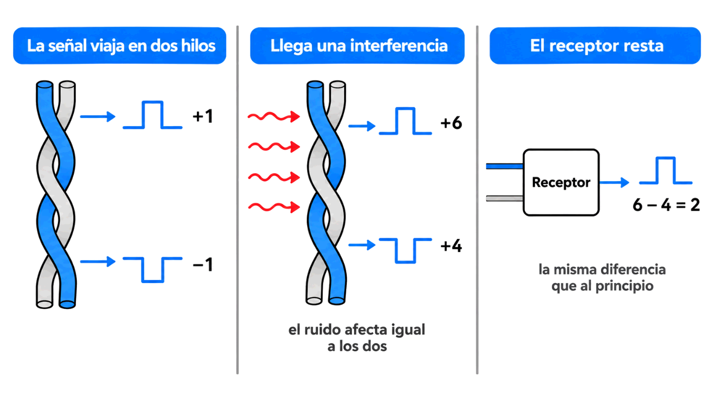
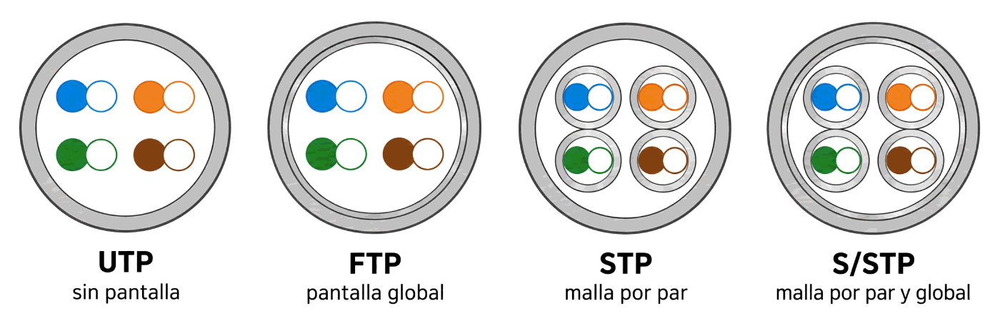

Contenido del día
- Medios guiados y no guiados
- Los seis criterios para juzgar un medio
- Las normas de cableado estructurado
- El par sin trenzar: categoría 1 y RJ-11
- Par trenzado: por qué se trenza
- La familia completa: UTP, STP, S/STP y FTP
- Qué significan los MHz de una categoría
- Resumen y errores frecuentes
- Repaso con flashcards
- Quiz del día
1. Medios guiados y no guiados
El medio de transmisión es el soporte físico por el que emisor y receptor se comunican. En los dos casos que existen la transmisión se hace con ondas electromagnéticas; la diferencia está en si alguien las conduce o no.
| Medios guiados | Medios no guiados | |
|---|---|---|
| Qué hacen | Conducen las ondas a través de un camino físico | Dan soporte para que las ondas se propaguen, pero no las dirigen |
| Ejemplos | Par trenzado, coaxial, fibra óptica | El aire: radio, microondas, infrarrojos, luz |
| Qué limita la velocidad | El propio medio: su construcción y su longitud | Más bien el espectro de frecuencia que se usa, y las condiciones atmosféricas |
| Cuándo se estudia | Esta semana | Semana 7 |
Esa última fila es más importante de lo que parece. En un cable, el medio es el que manda: cambiar de categoría cambia lo que se puede transmitir. En el aire no hay «categorías»; lo que decide es en qué banda de frecuencias trabajas y qué hay a tu alrededor.
2. Los seis criterios para juzgar un medio
Cada medio cumple unas determinadas características. El libro las lista en seis puntos, y conviene aprenderlos como una lista de comprobación: cuando el jueves tengas que elegir cable para una nave, los repasarás uno a uno.
| Criterio | La pregunta que responde | Dónde lo has visto ya |
|---|---|---|
| Velocidad de transmisión | ¿Cuántos bits por segundo admite? | Semana 5: bps |
| Ancho de banda que soporta | ¿Hasta qué frecuencia deja pasar la señal? | Semana 5, Día 1: hercios |
| Espacio entre repetidores | ¿Cada cuánto hay que regenerar la señal? | Semana 5, Día 4: atenuación |
| Fiabilidad en la transmisión | ¿Cuántos errores da? ¿Aguanta el ruido? | Semana 5, Día 4: S/N |
| Coste | ¿Cuánto cuesta el metro… y el montaje? | Hoy y el jueves |
| Facilidad de instalación | ¿Se puede doblar? ¿Hace falta un técnico? | Miércoles: fibra |
3. Las normas de cableado estructurado
Hay muchas formas de cablear un edificio, y si cada instalador hiciera la suya, nada encajaría con nada. Por eso existen las normas de cableado estructurado, que definen en la práctica cómo se instala una red en un edificio: qué cables, qué conectores, qué distancias y qué etiquetado.
| Norma | Quién la hace | Dónde se usa |
|---|---|---|
| EIA/TIA-568 | Asociación de Industrias de Electrónica y Asociación de Industrias de Telecomunicaciones (EE. UU.) | La más utilizada |
| EN-50173 | Normalización europea | Europa |
| ISO/IEC 11801 | Normalización internacional | Internacional |
De la EIA/TIA-568 ya conoces una parte: los órdenes de colores T568A y T568B. Pero la norma va mucho más allá, y es la que define las categorías de cable, las distancias máximas y hasta la obligación de etiquetar cada toma. La retomarás el jueves y, de lleno, en la Semana 8.
4. El par sin trenzar: categoría 1 y RJ-11
Antes del par trenzado está su hermano pobre, que todavía se usa: dos hilos de cobre paralelos recubiertos de plástico aislante. Sin trenzar.
| Característica | Par sin trenzar (paralelo) |
|---|---|
| Protección frente a interferencias | Muy poca |
| Uso habitual | Cable telefónico, para voz analógica |
| Conector | RJ-11, de 4 pines, de los que se usan solo los dos centrales (pines 2 y 3) |
| Modo de comunicación | Semidúplex: la información circula en los dos sentidos por el mismo cable, pero no a la vez |
| Distancia útil para datos | Apenas unos metros |
| En la clasificación de categorías | Categoría 1 |
Dos detalles que suelen caer en examen:
- En el estándar de la red telefónica básica no importa el orden de engastado, siempre que los dos hilos queden en los pines 2 y 3. En el par trenzado sí importa, y mucho: mañana verás por qué.
- El cable paralelo «en bus» es el que comunica los componentes dentro del ordenador: ahí las distancias son de centímetros y no hace falta protegerse del ruido.
Lo viste en el Mes 1. El cable telefónico es semidúplex; cada par de un cable de red trenzado trabaja en símplex, y es el conjunto de cuatro pares el que consigue el dúplex.
5. Par trenzado: por qué se trenza
El par trenzado son dos cables de cobre aislados, normalmente de 1 mm de espesor, enlazados de dos en dos de forma helicoidal, parecida a la estructura del ADN.
El motivo del trenzado ya lo conoces del Mes 1, pero ahora puedes entenderlo mejor:
Dos alambres paralelos constituyen una antena simple: pueden inducir corriente en los cables cercanos, o recibirla de ellos. Es el mismo principio por el que funciona un transformador. Al trenzarlos, cada tramo induce en sentido contrario al anterior y las interferencias se cancelan.

Cuantas más vueltas por metro tenga el trenzado, mejor cancela y más alta es la categoría del cable. Es uno de los tres factores que la norma tiene en cuenta para clasificarlo:
categoría del cable ← número de pares
← vueltas por metro del trenzado
← materiales empleados6. La familia completa: UTP, STP, S/STP y FTP
Los pares se agrupan en cables más gruesos recubiertos de aislante. Según cómo se apantallen, el libro distingue cuatro tipos. En el Mes 1 viste los dos primeros; aquí está la familia entera:
| Tipo | Qué lleva | Inmunidad al ruido | Flexibilidad y coste |
|---|---|---|---|
| UTP Unshielded Twisted Pair |
Ningún tipo de pantalla conductora | La menor: muy sensible a interferencias | Muy flexible y el más barato |
| STP Shielded Twisted Pair |
Una malla conductora alrededor de cada par, conectada a las tomas de tierra de los equipos | Grande | Rígido y caro |
| S/STP Screened Shielded Twisted Pair |
Malla por cada par más una pantalla global | La mayor de todas | El más rígido y el más caro |
| FTP Fully Shielded Twisted Pair |
Una única pantalla global trenzada, sin malla individual por par | Mejor que UTP, menor que STP | Coste inferior al STP |
El libro añade que al FTP también se le llama S/UTP (Screened Unshielded Twisted Pair) o S/FTP (Screened Fully Shielded Twisted Pair).

UTP ( o o o o ) sin pantalla
FTP [( o o o o )] una pantalla global
STP ( [o o] [o o] ) una malla por cada par
S/STP [( [o o] [o o] )] malla por par + pantalla global💡 Ampliación: la notación moderna, que no es la del libro
Esta parte no sale de la bibliografía de la asignatura, sino de la norma ISO/IEC 11801. La incluyo porque es lo que verás escrito en los cables que compres, y porque las siglas del libro no siempre coinciden con las del fabricante.
La notación actual tiene la forma XX/YZZ, donde lo de delante de la barra es la
pantalla global y lo de detrás, la de cada par:
- U = sin pantalla (unshielded)
- F = lámina de aluminio (foil)
- S = malla trenzada (screen)
| Notación ISO | Pantalla global | Por par | Nombre del libro |
|---|---|---|---|
U/UTP | ninguna | ninguna | UTP |
F/UTP | lámina | ninguna | FTP |
U/FTP | ninguna | lámina | ≈ STP |
S/FTP | malla | lámina | ≈ S/STP |
Ojo a la contradicción: para el libro, S/FTP es otro nombre del
FTP —una sola pantalla global—; para la norma ISO es el cable más apantallado de
todos. En un examen de la asignatura responde con la clasificación del libro; en una tienda, mira
la notación ISO impresa en la funda.
7. Qué significan los MHz de una categoría
Las normas de cableado estructurado clasifican los pares trenzados por categorías: categoría 1 (el cable paralelo de antes), 2, 3, 4, 5, 5e, 6 y 7. Del Mes 1 ya te suenan; lo que no habías podido entender entonces es qué garantiza exactamente una categoría.
Cuando la norma dice que una Cat 5e es «de 100 MHz», está diciendo que el cable mantiene sus parámetros —atenuación, diafonía— hasta 100 MHz, a 100 metros. No dice megabits: dice el rango de frecuencias que deja pasar.
| Categoría | Ancho de banda | Velocidad habitual a 100 m | Uso |
|---|---|---|---|
| Cat 1 | — | Voz analógica | Par paralelo, telefonía |
| Cat 3 | 16 MHz | 10 Mbps | 10BASE-T, telefonía de edificio |
| Cat 5 | 100 MHz | 100 Mbps | Fast Ethernet. Obsoleta |
| Cat 5e | 100 MHz | 1 Gbps | El mínimo razonable hoy |
| Cat 6 | 250 MHz | 1 Gbps (10 Gbps solo hasta 55 m) | Instalaciones nuevas |
| Cat 6A | 500 MHz | 10 Gbps | Troncales y centros de datos |
| Cat 7 | 600 MHz | 10 Gbps | Siempre apantallado; conector RJ-48, no RJ-45 |
La pregunta que deja mudos a media clase
Si una Cat 5e solo deja pasar 100 MHz, ¿cómo consigue 1 000 Mbps? Con lo de la semana pasada ya puedes contestar tú. Tres trucos combinados:
| Truco | Qué aporta | Dónde lo viste |
|---|---|---|
| Usar los 4 pares a la vez, en los dos sentidos | ×4 | Semana 5, Día 2 |
| PAM-5: cinco niveles de tensión, más de un bit por símbolo | ×2 aproximadamente | Semana 5, Día 2 |
| Codificación eficiente y cancelación de ecos | lo que falta | Semana 5, Día 2 |
Con Nyquist se ve de golpe: un canal de 100 MHz con dos niveles daría 200 Mbps por par; si se reparte entre cuatro pares y se usan más niveles por símbolo, el gigabit sale. Los hercios no se convierten en megabits con una regla fija: depende de cómo se codifique.
Subir de 100 a 500 MHz exige más vueltas por metro, cobre de más calidad, separadores internos entre pares —la «cruceta» de las Cat 6— y, muchas veces, pantalla. Todo eso es material y proceso de fabricación. Y además lo vuelve más rígido, que es el precio oculto: un Cat 6A apantallado no gira en una esquina como gira un UTP.
8. Resumen y errores frecuentes
- Los medios guiados conducen las ondas; los no guiados solo les dan soporte. En los guiados manda el medio; en los no guiados, la frecuencia.
- Seis criterios: velocidad, ancho de banda, espacio entre repetidores, fiabilidad, coste y facilidad de instalación.
- Normas de cableado estructurado: EIA/TIA-568 (la más usada), EN-50173 e ISO/IEC 11801.
- El par sin trenzar es la categoría 1: telefonía, conector RJ-11 de 4 pines usando los dos centrales, semidúplex.
- Se trenza porque dos hilos paralelos son una antena; el trenzado cancela lo inducido.
- UTP sin pantalla · STP malla por par · S/STP malla por par y global · FTP solo pantalla global.
- Una categoría garantiza un ancho de banda en MHz; los Mbps dependen además de la codificación.
| Se dice… | …pero en realidad |
|---|---|
| «Cat 6 son 250 megas» | Son 250 MHz de ancho de banda. Da para 1 Gbps holgadamente, y 10 Gbps en tramos cortos |
| «El apantallado siempre es mejor» | Solo si está bien conectado a tierra. Mal montado, mete más ruido que un UTP |
| «RJ-11 y RJ-45 son lo mismo más pequeño» | El RJ-11 tiene 4 pines y usa dos; el RJ-45, 8, y en el orden importa |
| «El cable telefónico es par trenzado» | El clásico es par paralelo, categoría 1, sin trenzar |
| «FTP y STP son sinónimos» | El STP apantalla cada par; el FTP, solo el conjunto |
| «El medio más caro es el mejor» | Depende de los seis criterios. Un STP en una oficina sin ruido es dinero tirado y una instalación más difícil |
| «El coste de un medio es su precio por metro» | El montaje suele pesar más que el cable, sobre todo en fibra |
9. Repaso con flashcards
Piensa la respuesta antes de girar la tarjeta.
Quiz del día
14 preguntas · 20 minutos · Contesta sin volver a la teoría
El cronómetro no corre mientras lees: arranca al llegar aquí, al pulsar «Empezar quiz» o al marcar tu primera respuesta.
Resultados
Respuestas correctas: 0 / 0
Respuestas incorrectas: 0
Vas a leer la ficha impresa en la funda de los cables que tengas por casa y a comprobar si su categoría da para la velocidad a la que tu equipo ha negociado el enlace.
→ Ir al laboratorio del Día 1 (66 min)
Montaje y comprobación: los ocho pasos de un RJ-45 macho, el conector hembra de la roseta, la herramienta de impacto y el error que arruina más instalaciones que ningún otro.
Tarea de calentamiento (5 min): mira el conector transparente del cable de tu router. ¿Hasta dónde llega el trenzado de los pares? ¿Entra dentro del conector o se deshace antes?